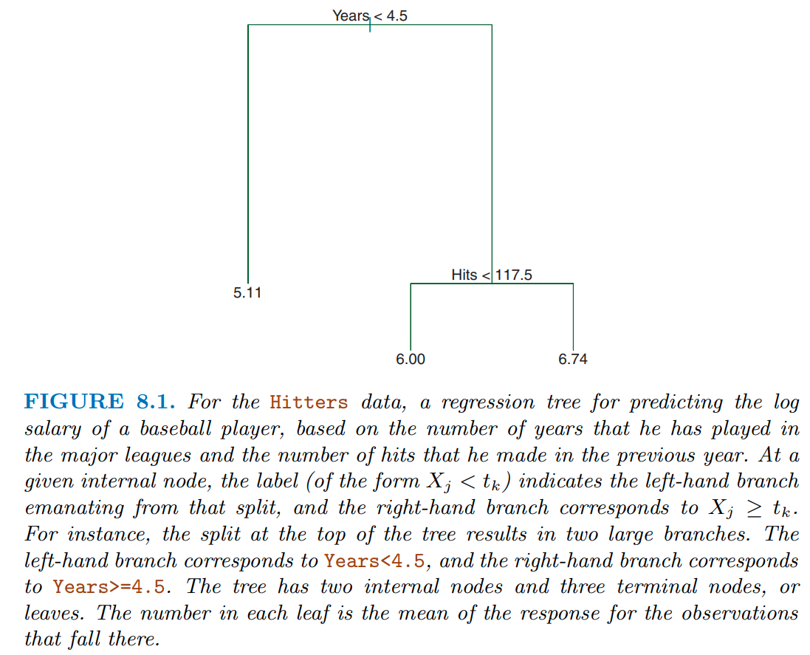
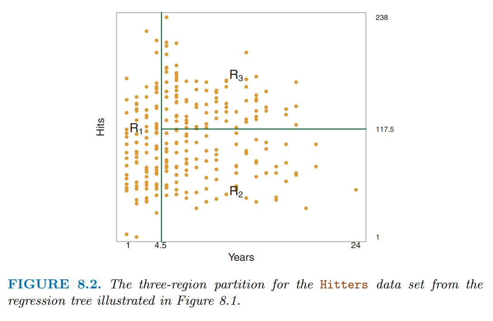
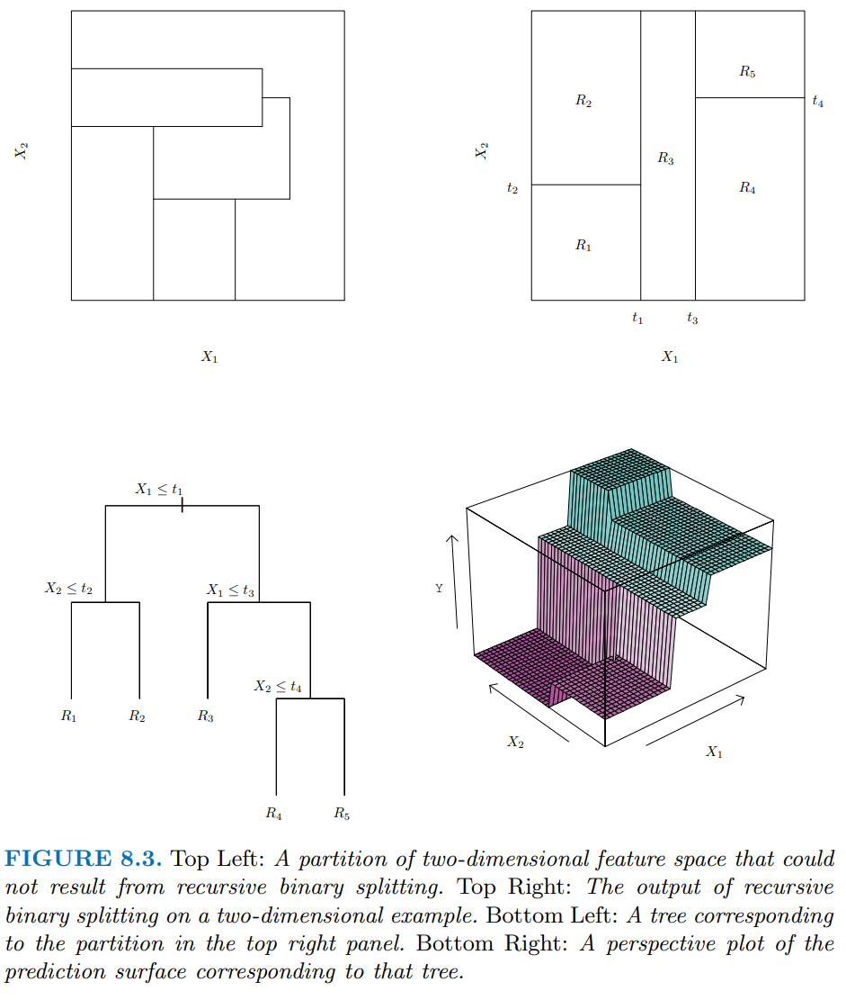
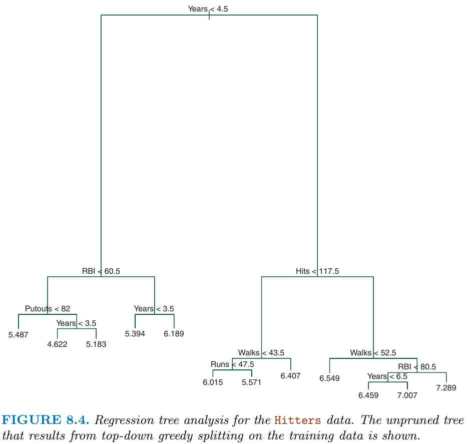

data_trn <- read_csv(here::here(path_data, "ames_raw_class.csv"),
col_types = cols()) |>
janitor::clean_names(case = "snake") |>
mutate(exter_qual = replace_na(exter_qual, "none"),
bsmt_qual = replace_na(bsmt_qual, "none"),
kitchen_qual = replace_na(kitchen_qual, "none"),
garage_qual = replace_na(garage_qual, "none"),
fireplace_qu = replace_na(fireplace_qu, "none"),
alley = replace_na(alley, "none"),
bsmt_cond = replace_na(bsmt_cond, "none"),
bsmt_exposure = replace_na(bsmt_exposure, "none"),
bsmt_fin_type_1 = replace_na(bsmt_fin_type_1, "none"),
bsmt_fin_type_2 = replace_na(bsmt_fin_type_2, "none"),
garage_type = replace_na(garage_type, "none"),
garage_finish = replace_na(garage_finish, "none"),
garage_cond = replace_na(garage_cond, "none"),
pool_qc = replace_na(pool_qc, "none"),
fence = replace_na(fence, "none"),
misc_feature = replace_na(misc_feature, "none")) |>
mutate(across(where(is.character), factor)) |>
mutate(across(where(is.factor), tidy_responses)) |>
mutate(mo_sold = factor(mo_sold,
levels = 1:12,
labels = c("jan", "feb", "mar", "apr", "may", "jun",
"jul", "aug", "sep", "oct", "nov", "dec"))) |>
mutate(ms_zoning = fct_recode(ms_zoning,
res_low = "rl",
res_med = "rm",
res_high = "rh",
float = "fv",
agri = "a_agr",
indus = "i_all",
commer = "c_all"),
bldg_type = fct_recode(bldg_type,
one_fam = "1fam",
two_fam = "2fmcon",
town_end = "twnhse",
town_inside = "twnhs")) |>
select(-pid)9 Advanced Models: Decision Trees, Bagging Trees, and Random Forest
9.1 Overview of Unit
9.1.1 Learning Objectives
- Decision trees
- Bagged trees
- How to bag models and the benefits
- Random Forest
- How Random Forest extends bagged trees
- Feature interpretation with decision tree plots
9.1.2 Readings
- James et al. (2023) Chapter 8, Tree Based Methods; pp 327 - 352
In addition, much of the content from this unit has been drawn from four chapters in a book called Hands On Machine Learning In R. It is a great book and I used it heavily (and at times verbatim) b/c it is quite clear in its coverage of these algorithms. If you want more depth, you might read chapters 9-12 from this book as a supplement to this unit in our course.
Post questions to the readings channel in Slack
9.1.3 Lecture Videos
- Lecture 1: Decision Trees ~ 30 mins
- Lecture 2: Decision Trees in Ames ~ 20 mins
- Lecture 3: Bagged Treesi ~ 10 mins
- Lecture 4: Bagged Trees in Ames ~ 6 mins
- Lecture 5: Random Forest ~ 16 mins
Post questions to the video-lectures channel in Slack
9.1.4 Coding Assignment
Post questions to application-assignments Slack channel
Submit the application assignment here and complete the unit quiz by 8 pm on Wednesday, March 20th
9.2 Decision Trees
Tree-based statistical algorithms:
Are a class of flexible, nonparametric algorithms
Work by partitioning the feature space into a number of smaller non-overlapping regions with similar responses by using a set of splitting rules
Make predictions by assigning a single prediction to each of these regions
Can produce simple rules that are easy to interpret and visualize with tree diagrams
Typically lack in predictive performance compared to other common algorithms
Serve as base learners for more powerful ensemble approaches
In figure 8.1 from James et al. (2023), they display a simple tree to predict log(salary) using years in the major league and hits from the previous year
This tree only has a depth of two (there are only two levels of splits)
- years < 4.5
- hits < 117.5
This results in three regions
- years < 4.5
- years >= 4.5 & hits < 117.5
- years >= 4.5 & hits >= 117.5
A single value for salary is predicted for each of these three regions
Decision trees are very interpretable. How we make decisions?

You can see these regions more clearly in the two-dimensional feature space displayed in figure 8.2
Notice how even with a limited tree depth of 2, we can already get a complex partitioning of the feature space.
Decision trees can encode complex decision boundaries (and even more complex than this as tree depth increases)

There are many methodologies for constructing decision trees but the most well-known is the classification and regression tree (CART) algorithm proposed in Breiman (1984)
This algorithm is implemented in the
rpartpackage and this is the engine we will use in tidymodels for decision trees (and bagged trees - a more advance ensemble method)The decision tree partitions the training data into homogeneous subgroups (i.e., groups with similar response values)
These subgroups are called nodes
The nodes are formed recursively using binary partitions by asking simple yes-or-no questions about each feature (e.g., are years in major league < 4.5?)
This is done a number of times until a suitable stopping criteria is satisfied, e.g.,
- a maximum depth of the tree is reached
- minimum number of remaining observations is available in a node
After all the partitioning has been done, the model predicts a single value for each region
- mean response among all observations in the region for regression problems
- majority vote among all observations in the region for classification problems
- probabilities (for classification) can be obtained using the proportion of each class within the region
The bottom left panel in Figure 8.3 shows a slightly more complicated tree with depth = 3 for two arbitrary predictors (x1 and x2)
The right column shows a representation of the regions formed by this tree (top) and a 3D representation that includes predictions for y (bottom)
The top left panel displays a set of regions that is NOT possible using binary recursive splitting. This makes the point that there are some patterns in the data that cannot be accommodated well by decision trees

Figure 8.4 shows a slightly more complicated decision tree for the hitters dataset with tree depth = 4. With respect to terminology:
- As noted earlier, each of the subgroups are called nodes
- The first “subgroup”” at the top of the tree is called the root node. This node contains all of the training data.
- The final subgroups at the bottom of the tree are called the terminal nodes or leaves (the “tree” is upside down)
- Every subgroup in between is referred to as an internal node.
- The connections between nodes are called branches
This tree also highlights another key point. The same features can be used for splitting repeatedly throughout the tree. 
CART uses binary recursive partitioning
Recursive simply means that each split (or rule) depends on the the splits above it:
- The algorithm first identifies the “best” feature to partition the observations in the root node into one of two new regions (i.e., new nodes that will be on the left and right branches leading from the root node.)
- For regression problems, the “best” feature (and the rule using that feature) is the feature that maximizes the reduction in SSE
- For classification problems, the split is selected to maximize the reduction in cross-entropy or the Gini index. These are measures of impurity (and we want to get homogeneous nodes so we minimize them)
- The splitting process is then repeated on each of the two new nodes (hence the name binary recursive partitioning).
- This process is continued until a suitable stopping criterion is reached.
The final depth of the tree is what affects the bias/variance trade-off for this algorithm
- Deep trees (with smaller and smaller sized nodes) will have lower and lower bias but can become overfit to the training data
- Shallow trees may be overly biased (underfit)
There are two primary approaches to achieve the optimal balance in the bias-variance trade-off
- Early stopping
- Pruning
With early stopping:
We explicitly stop the growth of the tree early based on a stopping rule. The two most common are:
- A maximum tree depth is reached
- The node has too few cases to be considered for further splits
These two stopping criteria can be implemented independently of each other but they do interact
They should ideally be tuned via the cross-validation approaches we have learned
With pruning, we let the tree grow large (max depth = 30 on 32-bit machines) and then prune it back to an optimal size:
To do this, we apply a penalty (\(\lambda\) * # of terminal nodes) to the cost function/impurity index (analogous to the L1/LASSO penalty). This penalty is also referred to as the cost complexity parameter
Big values for cost complexity will result in less complex trees. Small values will result in deeper, more complex trees
Cost complexity can be tuned by our standard cross-validation approaches by itself or in combination with the previous two hyper parameters
Feature engineering for decision trees can be simpler than with other algorithms because there are very few pre-processing requirements:
Monotonic transformations (e.g., power transformations) are not required to meet algorithm assumptions (in contrast to many parametric models). These transformations only shift the location of the optimal split points.
Outliers typically do not bias the results as much since the binary partitioning simply looks for a single location to make a split within the distribution of each feature.
The algorithm will handle non-linear effects of features and interactions natively
Categorical predictors do not need pre-processing to convert to numeric (e.g., dummy coding).
For unordered categorical features with more than two levels, the classes are ordered based on the outcome
- For regression problems, the mean of the response is used
- For classification problems, the proportion of the positive outcome class is used.
- This means that aggregating response levels is not necessary
Most decision tree implementations (including the
rpartengine) can easily handle missing values in the features and do not require imputation. Inrpart, this is handled by using surrogate splits.
It is important to note that feature engineering (e.g., alternative strategies for missing data, categorical level aggregation) may still improve performance, but this algorithm does not have the same pre-processing requirements we have seen previously and will work fairly well “out of the box”.
9.3 Decision Trees in Ames
Let’s see this algorithm in action
- We will explore the decision tree algorithm (and ensemble approaches using it) with the Ames Housing Prices database
- Parallel processing is VERY useful for ensemble approaches because they can be computationally costly
Read the Ames dataset
- All predictors
- Set factors
- Some tidying of variable names and responses
And take a quick look
data_trn |> skim_some()| Name | data_trn |
| Number of rows | 1955 |
| Number of columns | 80 |
| _______________________ | |
| Column type frequency: | |
| factor | 45 |
| numeric | 35 |
| ________________________ | |
| Group variables | None |
Variable type: factor
| skim_variable | n_missing | complete_rate | ordered | n_unique | top_counts |
|---|---|---|---|---|---|
| ms_sub_class | 0 | 1.00 | FALSE | 16 | 020: 730, 060: 388, 050: 208, 120: 122 |
| ms_zoning | 0 | 1.00 | FALSE | 7 | res: 1530, res: 297, flo: 91, com: 19 |
| street | 0 | 1.00 | FALSE | 2 | pav: 1946, grv: 9 |
| alley | 0 | 1.00 | FALSE | 3 | non: 1821, grv: 86, pav: 48 |
| lot_shape | 0 | 1.00 | FALSE | 4 | reg: 1258, ir1: 636, ir2: 49, ir3: 12 |
| land_contour | 0 | 1.00 | FALSE | 4 | lvl: 1769, hls: 75, bnk: 72, low: 39 |
| utilities | 0 | 1.00 | FALSE | 2 | all: 1953, nos: 2 |
| lot_config | 0 | 1.00 | FALSE | 5 | ins: 1454, cor: 328, cul: 114, fr2: 55 |
| land_slope | 0 | 1.00 | FALSE | 3 | gtl: 1864, mod: 78, sev: 13 |
| neighborhood | 0 | 1.00 | FALSE | 28 | nam: 299, col: 174, old: 161, edw: 135 |
| condition_1 | 0 | 1.00 | FALSE | 9 | nor: 1693, fee: 114, art: 54, rra: 31 |
| condition_2 | 0 | 1.00 | FALSE | 6 | nor: 1938, fee: 6, art: 4, pos: 3 |
| bldg_type | 0 | 1.00 | FALSE | 5 | one: 1631, tow: 145, dup: 77, tow: 64 |
| house_style | 0 | 1.00 | FALSE | 8 | 1st: 989, 2st: 580, 1_5: 224, slv: 79 |
| roof_style | 0 | 1.00 | FALSE | 6 | gab: 1557, hip: 362, gam: 16, fla: 9 |
| roof_matl | 0 | 1.00 | FALSE | 7 | com: 1929, tar: 11, wds: 8, wds: 4 |
| exterior_1st | 0 | 1.00 | FALSE | 15 | vin: 671, hdb: 301, met: 298, wd_: 283 |
| exterior_2nd | 0 | 1.00 | FALSE | 17 | vin: 662, met: 295, hdb: 279, wd_: 267 |
| mas_vnr_type | 17 | 0.99 | FALSE | 5 | non: 1167, brk: 581, sto: 171, brk: 18 |
| exter_qual | 0 | 1.00 | FALSE | 4 | ta: 1215, gd: 651, ex: 63, fa: 26 |
| exter_cond | 0 | 1.00 | FALSE | 5 | ta: 1707, gd: 195, fa: 42, ex: 8 |
| foundation | 0 | 1.00 | FALSE | 6 | pco: 865, cbl: 849, brk: 198, sla: 33 |
| bsmt_qual | 0 | 1.00 | FALSE | 5 | ta: 861, gd: 808, ex: 167, fa: 62 |
| bsmt_cond | 0 | 1.00 | FALSE | 6 | ta: 1739, gd: 85, fa: 69, non: 57 |
| bsmt_exposure | 0 | 1.00 | FALSE | 5 | no: 1271, av: 274, gd: 183, mn: 168 |
| bsmt_fin_type_1 | 0 | 1.00 | FALSE | 7 | unf: 576, glq: 535, alq: 294, rec: 202 |
| bsmt_fin_type_2 | 0 | 1.00 | FALSE | 7 | unf: 1655, rec: 75, lwq: 69, non: 57 |
| heating | 0 | 1.00 | FALSE | 6 | gas: 1920, gas: 20, gra: 8, wal: 5 |
| heating_qc | 0 | 1.00 | FALSE | 5 | ex: 979, ta: 590, gd: 324, fa: 60 |
| central_air | 0 | 1.00 | FALSE | 2 | y: 1821, n: 134 |
| electrical | 1 | 1.00 | FALSE | 5 | sbr: 1792, fus: 125, fus: 29, fus: 7 |
| kitchen_qual | 0 | 1.00 | FALSE | 5 | ta: 1011, gd: 765, ex: 126, fa: 52 |
| functional | 0 | 1.00 | FALSE | 8 | typ: 1822, min: 48, min: 41, mod: 23 |
| fireplace_qu | 0 | 1.00 | FALSE | 6 | non: 960, gd: 481, ta: 407, fa: 44 |
| garage_type | 0 | 1.00 | FALSE | 7 | att: 1161, det: 521, bui: 123, non: 107 |
| garage_finish | 0 | 1.00 | FALSE | 4 | unf: 826, rfn: 547, fin: 473, non: 109 |
| garage_qual | 0 | 1.00 | FALSE | 6 | ta: 1745, non: 109, fa: 79, gd: 16 |
| garage_cond | 0 | 1.00 | FALSE | 6 | ta: 1778, non: 109, fa: 46, gd: 12 |
| paved_drive | 0 | 1.00 | FALSE | 3 | y: 1775, n: 139, p: 41 |
| pool_qc | 0 | 1.00 | FALSE | 5 | non: 1945, ex: 3, gd: 3, fa: 2 |
| fence | 0 | 1.00 | FALSE | 5 | non: 1599, mnp: 215, gdw: 70, gdp: 61 |
| misc_feature | 0 | 1.00 | FALSE | 5 | non: 1887, she: 62, oth: 3, gar: 2 |
| mo_sold | 0 | 1.00 | FALSE | 12 | jun: 333, jul: 298, may: 273, apr: 177 |
| sale_type | 0 | 1.00 | FALSE | 10 | wd: 1695, new: 158, cod: 57, con: 16 |
| sale_condition | 0 | 1.00 | FALSE | 6 | nor: 1616, par: 161, abn: 120, fam: 30 |
Variable type: numeric
| skim_variable | n_missing | complete_rate | p0 | p100 |
|---|---|---|---|---|
| lot_frontage | 319 | 0.84 | 21 | 313 |
| lot_area | 0 | 1.00 | 1476 | 215245 |
| overall_qual | 0 | 1.00 | 1 | 10 |
| overall_cond | 0 | 1.00 | 1 | 9 |
| year_built | 0 | 1.00 | 1875 | 2010 |
| year_remod_add | 0 | 1.00 | 1950 | 2010 |
| mas_vnr_area | 17 | 0.99 | 0 | 1600 |
| bsmt_fin_sf_1 | 1 | 1.00 | 0 | 5644 |
| bsmt_fin_sf_2 | 1 | 1.00 | 0 | 1526 |
| bsmt_unf_sf | 1 | 1.00 | 0 | 2153 |
| total_bsmt_sf | 1 | 1.00 | 0 | 6110 |
| x1st_flr_sf | 0 | 1.00 | 372 | 4692 |
| x2nd_flr_sf | 0 | 1.00 | 0 | 2065 |
| low_qual_fin_sf | 0 | 1.00 | 0 | 1064 |
| gr_liv_area | 0 | 1.00 | 438 | 5642 |
| bsmt_full_bath | 1 | 1.00 | 0 | 3 |
| bsmt_half_bath | 1 | 1.00 | 0 | 2 |
| full_bath | 0 | 1.00 | 0 | 4 |
| half_bath | 0 | 1.00 | 0 | 2 |
| bedroom_abv_gr | 0 | 1.00 | 0 | 8 |
| kitchen_abv_gr | 0 | 1.00 | 0 | 3 |
| tot_rms_abv_grd | 0 | 1.00 | 3 | 14 |
| fireplaces | 0 | 1.00 | 0 | 3 |
| garage_yr_blt | 109 | 0.94 | 1896 | 2010 |
| garage_cars | 1 | 1.00 | 0 | 4 |
| garage_area | 1 | 1.00 | 0 | 1488 |
| wood_deck_sf | 0 | 1.00 | 0 | 870 |
| open_porch_sf | 0 | 1.00 | 0 | 742 |
| enclosed_porch | 0 | 1.00 | 0 | 552 |
| x3ssn_porch | 0 | 1.00 | 0 | 508 |
| screen_porch | 0 | 1.00 | 0 | 576 |
| pool_area | 0 | 1.00 | 0 | 738 |
| misc_val | 0 | 1.00 | 0 | 12500 |
| yr_sold | 0 | 1.00 | 2006 | 2010 |
| sale_price | 0 | 1.00 | 12789 | 745000 |
A basic recipe for Decision Tree approaches
Easy to do because the algorithm is very flexible
Will handle non-linear relationships and interactions natively
Dummy coding not needed (and generally not recommended) for factors
Not even very important to consider frequency of response categories
Not even necessary to convert character to factor (but I do to make it easy to do further feature engineering if desired)
Be careful with categorical variables which are coded with numbers
- They will be coded as numeric by R and treated as numeric by R
- If they are ordered (
overall_qual), this a priori order would be respected byrpartso no worries - If they are unordered, this will force an order on the levels rather than allowing
rpartto determine an order based on the outcome in your training data.
Notice the missing data for features (
rpartwill handle it with surrogates)
rec <- recipe(sale_price ~ ., data = data_trn)
rec_prep <- rec |>
prep(data_trn)
feat_trn <- rec_prep |>
bake(NULL)
feat_trn |> skim_some()| Name | feat_trn |
| Number of rows | 1955 |
| Number of columns | 80 |
| _______________________ | |
| Column type frequency: | |
| factor | 45 |
| numeric | 35 |
| ________________________ | |
| Group variables | None |
Variable type: factor
| skim_variable | n_missing | complete_rate | ordered | n_unique | top_counts |
|---|---|---|---|---|---|
| ms_sub_class | 0 | 1.00 | FALSE | 16 | 020: 730, 060: 388, 050: 208, 120: 122 |
| ms_zoning | 0 | 1.00 | FALSE | 7 | res: 1530, res: 297, flo: 91, com: 19 |
| street | 0 | 1.00 | FALSE | 2 | pav: 1946, grv: 9 |
| alley | 0 | 1.00 | FALSE | 3 | non: 1821, grv: 86, pav: 48 |
| lot_shape | 0 | 1.00 | FALSE | 4 | reg: 1258, ir1: 636, ir2: 49, ir3: 12 |
| land_contour | 0 | 1.00 | FALSE | 4 | lvl: 1769, hls: 75, bnk: 72, low: 39 |
| utilities | 0 | 1.00 | FALSE | 2 | all: 1953, nos: 2 |
| lot_config | 0 | 1.00 | FALSE | 5 | ins: 1454, cor: 328, cul: 114, fr2: 55 |
| land_slope | 0 | 1.00 | FALSE | 3 | gtl: 1864, mod: 78, sev: 13 |
| neighborhood | 0 | 1.00 | FALSE | 28 | nam: 299, col: 174, old: 161, edw: 135 |
| condition_1 | 0 | 1.00 | FALSE | 9 | nor: 1693, fee: 114, art: 54, rra: 31 |
| condition_2 | 0 | 1.00 | FALSE | 6 | nor: 1938, fee: 6, art: 4, pos: 3 |
| bldg_type | 0 | 1.00 | FALSE | 5 | one: 1631, tow: 145, dup: 77, tow: 64 |
| house_style | 0 | 1.00 | FALSE | 8 | 1st: 989, 2st: 580, 1_5: 224, slv: 79 |
| roof_style | 0 | 1.00 | FALSE | 6 | gab: 1557, hip: 362, gam: 16, fla: 9 |
| roof_matl | 0 | 1.00 | FALSE | 7 | com: 1929, tar: 11, wds: 8, wds: 4 |
| exterior_1st | 0 | 1.00 | FALSE | 15 | vin: 671, hdb: 301, met: 298, wd_: 283 |
| exterior_2nd | 0 | 1.00 | FALSE | 17 | vin: 662, met: 295, hdb: 279, wd_: 267 |
| mas_vnr_type | 17 | 0.99 | FALSE | 5 | non: 1167, brk: 581, sto: 171, brk: 18 |
| exter_qual | 0 | 1.00 | FALSE | 4 | ta: 1215, gd: 651, ex: 63, fa: 26 |
| exter_cond | 0 | 1.00 | FALSE | 5 | ta: 1707, gd: 195, fa: 42, ex: 8 |
| foundation | 0 | 1.00 | FALSE | 6 | pco: 865, cbl: 849, brk: 198, sla: 33 |
| bsmt_qual | 0 | 1.00 | FALSE | 5 | ta: 861, gd: 808, ex: 167, fa: 62 |
| bsmt_cond | 0 | 1.00 | FALSE | 6 | ta: 1739, gd: 85, fa: 69, non: 57 |
| bsmt_exposure | 0 | 1.00 | FALSE | 5 | no: 1271, av: 274, gd: 183, mn: 168 |
| bsmt_fin_type_1 | 0 | 1.00 | FALSE | 7 | unf: 576, glq: 535, alq: 294, rec: 202 |
| bsmt_fin_type_2 | 0 | 1.00 | FALSE | 7 | unf: 1655, rec: 75, lwq: 69, non: 57 |
| heating | 0 | 1.00 | FALSE | 6 | gas: 1920, gas: 20, gra: 8, wal: 5 |
| heating_qc | 0 | 1.00 | FALSE | 5 | ex: 979, ta: 590, gd: 324, fa: 60 |
| central_air | 0 | 1.00 | FALSE | 2 | y: 1821, n: 134 |
| electrical | 1 | 1.00 | FALSE | 5 | sbr: 1792, fus: 125, fus: 29, fus: 7 |
| kitchen_qual | 0 | 1.00 | FALSE | 5 | ta: 1011, gd: 765, ex: 126, fa: 52 |
| functional | 0 | 1.00 | FALSE | 8 | typ: 1822, min: 48, min: 41, mod: 23 |
| fireplace_qu | 0 | 1.00 | FALSE | 6 | non: 960, gd: 481, ta: 407, fa: 44 |
| garage_type | 0 | 1.00 | FALSE | 7 | att: 1161, det: 521, bui: 123, non: 107 |
| garage_finish | 0 | 1.00 | FALSE | 4 | unf: 826, rfn: 547, fin: 473, non: 109 |
| garage_qual | 0 | 1.00 | FALSE | 6 | ta: 1745, non: 109, fa: 79, gd: 16 |
| garage_cond | 0 | 1.00 | FALSE | 6 | ta: 1778, non: 109, fa: 46, gd: 12 |
| paved_drive | 0 | 1.00 | FALSE | 3 | y: 1775, n: 139, p: 41 |
| pool_qc | 0 | 1.00 | FALSE | 5 | non: 1945, ex: 3, gd: 3, fa: 2 |
| fence | 0 | 1.00 | FALSE | 5 | non: 1599, mnp: 215, gdw: 70, gdp: 61 |
| misc_feature | 0 | 1.00 | FALSE | 5 | non: 1887, she: 62, oth: 3, gar: 2 |
| mo_sold | 0 | 1.00 | FALSE | 12 | jun: 333, jul: 298, may: 273, apr: 177 |
| sale_type | 0 | 1.00 | FALSE | 10 | wd: 1695, new: 158, cod: 57, con: 16 |
| sale_condition | 0 | 1.00 | FALSE | 6 | nor: 1616, par: 161, abn: 120, fam: 30 |
Variable type: numeric
| skim_variable | n_missing | complete_rate | p0 | p100 |
|---|---|---|---|---|
| lot_frontage | 319 | 0.84 | 21 | 313 |
| lot_area | 0 | 1.00 | 1476 | 215245 |
| overall_qual | 0 | 1.00 | 1 | 10 |
| overall_cond | 0 | 1.00 | 1 | 9 |
| year_built | 0 | 1.00 | 1875 | 2010 |
| year_remod_add | 0 | 1.00 | 1950 | 2010 |
| mas_vnr_area | 17 | 0.99 | 0 | 1600 |
| bsmt_fin_sf_1 | 1 | 1.00 | 0 | 5644 |
| bsmt_fin_sf_2 | 1 | 1.00 | 0 | 1526 |
| bsmt_unf_sf | 1 | 1.00 | 0 | 2153 |
| total_bsmt_sf | 1 | 1.00 | 0 | 6110 |
| x1st_flr_sf | 0 | 1.00 | 372 | 4692 |
| x2nd_flr_sf | 0 | 1.00 | 0 | 2065 |
| low_qual_fin_sf | 0 | 1.00 | 0 | 1064 |
| gr_liv_area | 0 | 1.00 | 438 | 5642 |
| bsmt_full_bath | 1 | 1.00 | 0 | 3 |
| bsmt_half_bath | 1 | 1.00 | 0 | 2 |
| full_bath | 0 | 1.00 | 0 | 4 |
| half_bath | 0 | 1.00 | 0 | 2 |
| bedroom_abv_gr | 0 | 1.00 | 0 | 8 |
| kitchen_abv_gr | 0 | 1.00 | 0 | 3 |
| tot_rms_abv_grd | 0 | 1.00 | 3 | 14 |
| fireplaces | 0 | 1.00 | 0 | 3 |
| garage_yr_blt | 109 | 0.94 | 1896 | 2010 |
| garage_cars | 1 | 1.00 | 0 | 4 |
| garage_area | 1 | 1.00 | 0 | 1488 |
| wood_deck_sf | 0 | 1.00 | 0 | 870 |
| open_porch_sf | 0 | 1.00 | 0 | 742 |
| enclosed_porch | 0 | 1.00 | 0 | 552 |
| x3ssn_porch | 0 | 1.00 | 0 | 508 |
| screen_porch | 0 | 1.00 | 0 | 576 |
| pool_area | 0 | 1.00 | 0 | 738 |
| misc_val | 0 | 1.00 | 0 | 12500 |
| yr_sold | 0 | 1.00 | 2006 | 2010 |
| sale_price | 0 | 1.00 | 12789 | 745000 |
Fit a simple decision tree
- Use
rpartengine tree_depth = 3min_n = 2andcost_complexity = 0removes impact of those hyperparametersmodel = TRUEif you want to plot the decision tree withrplot.plot()from therpart.plotpackage
fit_tree_ex1 <-
decision_tree(tree_depth = 3, min_n = 2, cost_complexity = 0) |>
set_engine("rpart", model = TRUE) |>
set_mode("regression") |>
fit(sale_price ~ garage_cars + garage_area + overall_qual + kitchen_qual +
bsmt_qual, data = feat_trn)Let’s plot the decision tree using rpart.plot for a package with the same name. No need to load the full package
- Easy to understand how the model makes predictions
fit_tree_ex1$fit |> rpart.plot::rpart.plot()
Using only 10 bootstraps to save time. Use more in your work!
set.seed(20140102)
splits_boot <- data_trn |>
bootstraps(times = 10, strata = "sale_price")Now let’s evaluate its performance in our OOB held-out sets
fits_tree_ex1 <- cache_rds(
expr = {
decision_tree(tree_depth = 3, min_n = 2, cost_complexity = 0) |>
set_engine("rpart") |>
set_mode("regression") |>
fit_resamples(preprocessor = rec,
resamples = splits_boot,
metrics = metric_set(rmse))
},
rerun = rerun_setting,
dir = "cache/009/",
file = "fits_tree_ex1")Not that great (remember unit 3 with only a subset of predictors did better than this)
fits_tree_ex1 |> collect_metrics()# A tibble: 1 × 6
.metric .estimator mean n std_err .config
<chr> <chr> <dbl> <int> <dbl> <chr>
1 rmse standard 42771. 100 271. Preprocessor1_Model1We want to allow a deeper tree to reduce bias
But will also need to consider pruning tree to prevent overfitting
This is the bias-variance trade-off again. To find the sweet stop we can tune
- tree_depth
- min_n
- cost_complexity
Set up a tuning grid
- Can use
tidymodelsto determine possibly good values to start - Still need to evaluate
- May still need to adjust
cost_complexity()Cost-Complexity Parameter (quantitative)
Transformer: log-10 [1e-100, Inf]
Range (transformed scale): [-10, -1]tree_depth()Tree Depth (quantitative)
Range: [1, 15]min_n()Minimal Node Size (quantitative)
Range: [2, 40]We can use these function with dials::grid_regular() to get a tuning grid
With levels = 4 we get 64 combinations of values (4 x 4 x 4)
grid_tree <- grid_regular(cost_complexity(), tree_depth(), min_n(), levels = 4)
grid_tree# A tibble: 64 × 3
cost_complexity tree_depth min_n
<dbl> <int> <int>
1 0.0000000001 1 2
2 0.0000001 1 2
3 0.0001 1 2
4 0.1 1 2
5 0.0000000001 5 2
6 0.0000001 5 2
7 0.0001 5 2
8 0.1 5 2
9 0.0000000001 10 2
10 0.0000001 10 2
# ℹ 54 more rowsNow we can use the bootstrap as intended to select best values of hyperparameters (i.e., tune them)
fits_tree <- cache_rds(
expr = {
decision_tree(cost_complexity = tune(),
tree_depth = tune(),
min_n = tune()) |>
set_engine("rpart") |>
set_mode("regression") |>
tune_grid(preprocessor = rec,
resamples = splits_boot,
grid = grid_tree,
metrics = metric_set(rmse))
},
rerun = rerun_setting,
dir = "cache/009",
file = "fits_tree")Can use autoplot() to view performance by hyperparameter values
# autoplot(fits_tree)The best values for some of the hyperparameters (tree depth and min n) are at their edges so we might consider extending their range and training again. I will skip this here to save time.
This model as good as our other models in unit 3 (see OOB cross-validated error above). It was easy to fit with all the predictors. It might get even a little better for we further tuned the hyperparameters. However, we can still do better with a more advanced algorithm based on decision trees.
show_best(fits_tree)# A tibble: 5 × 9
cost_complexity tree_depth min_n .metric .estimator mean n std_err
<dbl> <int> <int> <chr> <chr> <dbl> <int> <dbl>
1 0.0001 15 40 rmse standard 37151. 100 219.
2 0.0000000001 10 40 rmse standard 37154. 100 220.
3 0.0000001 10 40 rmse standard 37154. 100 220.
4 0.0000000001 15 40 rmse standard 37154. 100 219.
5 0.0000001 15 40 rmse standard 37154. 100 219.
.config
<chr>
1 Preprocessor1_Model63
2 Preprocessor1_Model57
3 Preprocessor1_Model58
4 Preprocessor1_Model61
5 Preprocessor1_Model62Let’s still fit this tree to all the training data and understand it a bit better
fit_tree <-
decision_tree(cost_complexity = select_best(fits_tree)$cost_complexity,
tree_depth = select_best(fits_tree)$tree_depth,
min_n = select_best(fits_tree)$min_n) |>
set_engine("rpart", model = TRUE) |>
set_mode("regression") |>
fit(sale_price ~ ., data = feat_trn)Still interpretable but need bigger, higher res plot
fit_tree$fit |> rpart.plot::rpart.plot()Warning: labs do not fit even at cex 0.15, there may be some overplotting
Even though decision trees themselves are relatively poor at prediction, these ideas will be key when we consider more advanced ensemble approaches
Ensemble approaches aggregate multiple models to improve prediction. Our first ensemble approach is bagging.
9.4 Bagging
Bootstrap aggregating (bagging) prediction models involve:
- Fitting multiple versions of a prediction model
- Combining (or ensembling) them into an aggregated prediction
- You can begin to learn more about bagging in the original paper that proposed the technique
The specific steps are:
- B bootstraps of the original training data are created [NOTE: This is a new use for bootstrapping! More on that in a moment]
- The model configuration (either regression or classification algorithm with a specific set of features and hyperparameters) is fit to each bootstrap sample
- These individual fitted models are called the base learners
- Final predictions are made by aggregating the predictions across all of the individual base learners
- For regression, this can be the average of base learner predictions
- For classification, it can be either the average of estimated class probabilities or majority class vote across individual base learners
Bagging effectively reduces the variance of an individual base learner
However, bagging does not always improve on an individual base learner
- Bagging works especially well for flexible, high variance base learners (based on statistical algorithms or other characteristics of the problem)
- These base learners can become overfit to their training data
- Therefore base learners will produce different predictions across each bootstrap sample of the training data
- The aggregate predictions across base learners will be lower variance
- With respect to statistical algorithms that you know, decision trees are high variance (KNN also)
- In contrast, bagging a linear model (with low P to N ratio) would likely not improve much upon the base learners’ performance
Bagging takes advantage of the “wisdom of the crowd” effect (Surowiecki, 2005)
- Aggregation of information across large diverse groups often produces decisions that are better than any single member of the group
- Regis Philbin once stated that the Ask the Audience lifeline on Who Wants to be a Millionaire is right 95% of the time
- With more diverse group members and perspectives (i.e., high variance learners), we get better aggregated predictions
With decision trees, optimal performance is often found by bagging 50-500 base learner trees
- Data sets that have a few strong features typically require fewer trees
- Data sets with lots of noise or multiple strong features may need more
- Using too many trees will NOT lead to overfitting, just no further benefit in variance reduction
- However, too many trees will increase computational costs (particularly if you are also using “an outer loop” of resampling to select among configurations or to evaluate the model)
Bagging uses bootstrap resampling for yet another goal. We can use bootstrapping
- For cross-validation to assess performance model configuration(s)
- Select among model model configurations
- Evaluate a final model configuration (if we don’t have independent test set)
- For estimating standard errors and confidence intervals of statistics (no longer part of this course - see Appendix)
- And now for building multiple base learners whose aggregate predictions are lower variance than any of the individual base learners
When bagging, we can (and typically will):
- Use an “outer loop” of bootstrap resampling to select among model configurations
- While using an “inner loop” of bootstrapping to fit multiple base learners for any specific configuration
- This inner loop is often opaque to users (more on this in a moment), happening under the hood in the algorithm (e.g., Random Forest) or the implementation of the code (
bagged_tree())
9.5 Bagging Trees in Ames
We will now use bag_tree() rather than decision_tree() from the baguette package. Not part of minimal tidymodels libraries so we will need to load this package
library(baguette)We can still tune the same hyperparameters. We are now just creating many rpart decision trees and aggregating their predictions. We will START with the recommended values by tidymodels
We can use the same recipe
We will use the same splits to tune hyperparameters
Now we need times = 20 to fit 20 models (inner loop of bootstrapping) to each of the 10 bootstraps (outer loop; set earlier) of the training data.
- Keeping this low to reduce computational costs.
- You will likely want more bootstrapped models to reduce final model variance and more boostraps resamples to get a lower variance performance estimate to select best hyperparameters
fits_bagged <- cache_rds(
expr = {
bag_tree(cost_complexity = tune(),
tree_depth = tune(),
min_n = tune()) |>
set_engine("rpart", times = 20) |>
set_mode("regression") |>
tune_grid(preprocessor = rec,
resamples = splits_boot,
grid = grid_tree,
metrics = metric_set(rmse))
},
rerun = rerun_setting,
dir = "cache/009/",
file = "fits_bagged")Can still use autoplot() to view performance by hyperparameter values
# autoplot(fits_bagged)The best values for all hyperparameters are at their edges.
- Looks like we could have fit a more complex model.
- Makes sense because we are relying on bagging to reduce model variance so we can accommodate base learners that are more overfit.
show_best(fits_bagged)# A tibble: 5 × 9
cost_complexity tree_depth min_n .metric .estimator mean n std_err
<dbl> <int> <int> <chr> <chr> <dbl> <int> <dbl>
1 0.0000001 15 2 rmse standard 27777. 10 537.
2 0.0001 15 2 rmse standard 27801. 10 644.
3 0.0001 15 14 rmse standard 27870. 10 748.
4 0.0000000001 10 14 rmse standard 27908. 10 777.
5 0.0000000001 10 2 rmse standard 27910. 10 609.
.config
<chr>
1 Preprocessor1_Model14
2 Preprocessor1_Model15
3 Preprocessor1_Model31
4 Preprocessor1_Model25
5 Preprocessor1_Model09Switching to expand_grid() to manually select
grid_tree_bagged <- expand_grid(cost_complexity = c(10^-10, 10^-7, 10^-04, 10^-01),
tree_depth = c(10, 15, 20, 30),
min_n = c(2, 14, 27, 40))
grid_tree_bagged# A tibble: 64 × 3
cost_complexity tree_depth min_n
<dbl> <dbl> <dbl>
1 0.0000000001 10 2
2 0.0000000001 10 14
3 0.0000000001 10 27
4 0.0000000001 10 40
5 0.0000000001 15 2
6 0.0000000001 15 14
7 0.0000000001 15 27
8 0.0000000001 15 40
9 0.0000000001 20 2
10 0.0000000001 20 14
# ℹ 54 more rowsfits_bagged_2 <- cache_rds(
expr = {
bag_tree(cost_complexity = tune(),
tree_depth = tune(),
min_n = tune()) |>
set_engine("rpart", times = 20) |>
set_mode("regression") |>
tune_grid(preprocessor = rec,
resamples = splits_boot,
grid = grid_tree_bagged,
metrics = metric_set(rmse))
},
rerun = rerun_setting,
dir = "cache/009/",
file = "fits_bagged_2")Review hyperparameter plot
# autoplot(fits_bagged_2)This looks better. And look at that BIG improvement in OOB cross-validated RMSE
show_best(fits_bagged_2)# A tibble: 5 × 9
cost_complexity tree_depth min_n .metric .estimator mean n std_err
<dbl> <dbl> <dbl> <chr> <chr> <dbl> <int> <dbl>
1 0.0001 15 2 rmse standard 27575. 10 640.
2 0.0000000001 15 2 rmse standard 27673. 10 635.
3 0.0000001 30 2 rmse standard 27724. 10 662.
4 0.0000001 20 2 rmse standard 27726. 10 713.
5 0.0000000001 20 2 rmse standard 27758. 10 625.
.config
<chr>
1 Preprocessor1_Model37
2 Preprocessor1_Model05
3 Preprocessor1_Model29
4 Preprocessor1_Model25
5 Preprocessor1_Model09BUT, we can do better still…..
9.6 Random Forest
Random forests are a modification of bagged decision trees that build a large collection of de-correlated trees to further improve predictive performance.
- They are a very popular “out-of-the-box” or “off-the-shelf” statistical algorithm that predicts well
- Many modern implementations of random forests exist; however, Breiman’s algorithm (Breiman 2001) has largely become the standard procedure.
- We will use the
rangerengine implementation of this algorithm
Random forests build on decision trees (its base learners) and bagging to reduce final model variance.
Simply bagging trees is not optimal to reduce final model variance
The trees in bagging are not completely independent of each other since all the original features are considered at every split of every tree.
Trees from different bootstrap samples typically have similar structure to each other (especially at the top of the tree) due to any underlying strong relationships
The trees are correlated (not as diverse a set of base learners)
Random forests help to reduce tree correlation by injecting more randomness into the tree-growing process
More specifically, while growing a decision tree during the bagging process, random forests perform split-variable randomization where each time a split is to be performed, the search for the best split variable is limited to a random subset of mtry of the original p features.
Because the algorithm randomly selects a bootstrap sample to train on and a random sample of features to use at each split, a more diverse set of trees is produced which tends to lessen tree correlation beyond bagged trees and often dramatically increases predictive power.
There are three primary hyper-parameters to consider tuning in random forests within tidymodels
mtrytreesmin_n
mtry
- The number of features to randomly select for splitting on each split
- Selection of value for
mtrybalances low tree correlation with reasonable predictive strength - Good starting values for
mtryare \(\frac{p}{3}\) for regression and \(\sqrt{p}\) for classification - When there are fewer relevant features (e.g., noisy data) a higher value may be needed to make it more likely to select those features with the strongest signal.
- When there are many relevant features, a lower value might perform better
- Default in
rangeris \(\sqrt{p}\)
trees
- The number of bootstrap resamples of the training data to fit decision tree base learners
- The number of trees needs to be sufficiently large to stabilize the error rate.
- A good rule of thumb is to start with 10 times the number of features
- You may need to adjust based on values for
mtryandmin_n - More trees provide more robust and stable error estimates and variable importance measures
- More trees == more computational cost
- Default in
rangeris 500
min_n
- Minimum number of observations in a new node rather than min to split
- Note that this is different than its definition for decision trees and bagged trees
- You can consider the defaults (above) as a starting point
- If your data has many noisy predictors and higher
mtryvalues are performing best, then performance may improve by increasing node size (i.e., decreasing tree depth and complexity). - If computation time is a concern then you can often decrease run time substantially by increasing the node size and have only marginal impacts to your error estimate
- Default in ranger is 1 for classification and 5 for regression
9.6.1 Random Forest in Ames
Let’s see how de-correlated the base learner trees improves their aggregate performance
We will need a new recipe for Random Forest
- Random Forest works well out of the box with little feature engineering
- It is still aggregating decision trees in bootstrap resamples of the training data
- However, the Random Forest algorithm does not natively handling missing data. We need to handle missing data manually during feature engineering. We will impute
rec_rf <- recipe(sale_price ~ ., data = data_trn) |>
step_impute_median(all_numeric()) |>
step_impute_mode(all_nominal())
rec_rf_prep <- rec_rf |>
prep(data_trn)
feat_trn_rf <- rec_rf_prep |>
make_features(NULL)Rows: 1,955
Columns: 80
$ ms_sub_class <fct> 020, 020, 020, 060, 120, 120, 120, 060, 060, 060, 020,…
$ ms_zoning <fct> res_low, res_high, res_low, res_low, res_low, res_low,…
$ lot_frontage <dbl> 141, 80, 81, 74, 41, 43, 39, 60, 75, 63, 85, 69, 47, 1…
$ lot_area <dbl> 31770, 11622, 14267, 13830, 4920, 5005, 5389, 7500, 10…
$ street <fct> pave, pave, pave, pave, pave, pave, pave, pave, pave, …
$ alley <fct> none, none, none, none, none, none, none, none, none, …
$ lot_shape <fct> ir1, reg, ir1, ir1, reg, ir1, ir1, reg, ir1, ir1, reg,…
$ land_contour <fct> lvl, lvl, lvl, lvl, lvl, hls, lvl, lvl, lvl, lvl, lvl,…
$ utilities <fct> allpub, allpub, allpub, allpub, allpub, allpub, allpub…
$ lot_config <fct> corner, inside, corner, inside, inside, inside, inside…
$ land_slope <fct> gtl, gtl, gtl, gtl, gtl, gtl, gtl, gtl, gtl, gtl, gtl,…
$ neighborhood <fct> names, names, names, gilbert, stonebr, stonebr, stoneb…
$ condition_1 <fct> norm, feedr, norm, norm, norm, norm, norm, norm, norm,…
$ condition_2 <fct> norm, norm, norm, norm, norm, norm, norm, norm, norm, …
$ bldg_type <fct> one_fam, one_fam, one_fam, one_fam, town_end, town_end…
$ house_style <fct> 1story, 1story, 1story, 2story, 1story, 1story, 1story…
$ overall_qual <dbl> 6, 5, 6, 5, 8, 8, 8, 7, 6, 6, 7, 8, 8, 8, 9, 4, 6, 6, …
$ overall_cond <dbl> 5, 6, 6, 5, 5, 5, 5, 5, 5, 5, 5, 5, 5, 7, 2, 5, 6, 6, …
$ year_built <dbl> 1960, 1961, 1958, 1997, 2001, 1992, 1995, 1999, 1993, …
$ year_remod_add <dbl> 1960, 1961, 1958, 1998, 2001, 1992, 1996, 1999, 1994, …
$ roof_style <fct> hip, gable, hip, gable, gable, gable, gable, gable, ga…
$ roof_matl <fct> compshg, compshg, compshg, compshg, compshg, compshg, …
$ exterior_1st <fct> brkface, vinylsd, wd_sdng, vinylsd, cemntbd, hdboard, …
$ exterior_2nd <fct> plywood, vinylsd, wd_sdng, vinylsd, cmentbd, hdboard, …
$ mas_vnr_type <fct> stone, none, brkface, none, none, none, none, none, no…
$ mas_vnr_area <dbl> 112, 0, 108, 0, 0, 0, 0, 0, 0, 0, 0, 0, 603, 0, 350, 0…
$ exter_qual <fct> ta, ta, ta, ta, gd, gd, gd, ta, ta, ta, ta, gd, ex, gd…
$ exter_cond <fct> ta, ta, ta, ta, ta, ta, ta, ta, ta, ta, ta, ta, ta, ta…
$ foundation <fct> cblock, cblock, cblock, pconc, pconc, pconc, pconc, pc…
$ bsmt_qual <fct> ta, ta, ta, gd, gd, gd, gd, ta, gd, gd, gd, gd, gd, gd…
$ bsmt_cond <fct> gd, ta, ta, ta, ta, ta, ta, ta, ta, ta, ta, ta, ta, ta…
$ bsmt_exposure <fct> gd, no, no, no, mn, no, no, no, no, no, gd, av, gd, av…
$ bsmt_fin_type_1 <fct> blq, rec, alq, glq, glq, alq, glq, unf, unf, unf, glq,…
$ bsmt_fin_sf_1 <dbl> 639, 468, 923, 791, 616, 263, 1180, 0, 0, 0, 637, 368,…
$ bsmt_fin_type_2 <fct> unf, lwq, unf, unf, unf, unf, unf, unf, unf, unf, unf,…
$ bsmt_fin_sf_2 <dbl> 0, 144, 0, 0, 0, 0, 0, 0, 0, 0, 0, 1120, 0, 0, 0, 0, 1…
$ bsmt_unf_sf <dbl> 441, 270, 406, 137, 722, 1017, 415, 994, 763, 789, 663…
$ total_bsmt_sf <dbl> 1080, 882, 1329, 928, 1338, 1280, 1595, 994, 763, 789,…
$ heating <fct> gasa, gasa, gasa, gasa, gasa, gasa, gasa, gasa, gasa, …
$ heating_qc <fct> fa, ta, ta, gd, ex, ex, ex, gd, gd, gd, gd, ta, ex, gd…
$ central_air <fct> y, y, y, y, y, y, y, y, y, y, y, y, y, y, y, y, y, y, …
$ electrical <fct> sbrkr, sbrkr, sbrkr, sbrkr, sbrkr, sbrkr, sbrkr, sbrkr…
$ x1st_flr_sf <dbl> 1656, 896, 1329, 928, 1338, 1280, 1616, 1028, 763, 789…
$ x2nd_flr_sf <dbl> 0, 0, 0, 701, 0, 0, 0, 776, 892, 676, 0, 0, 1589, 672,…
$ low_qual_fin_sf <dbl> 0, 0, 0, 0, 0, 0, 0, 0, 0, 0, 0, 0, 0, 0, 0, 0, 0, 0, …
$ gr_liv_area <dbl> 1656, 896, 1329, 1629, 1338, 1280, 1616, 1804, 1655, 1…
$ bsmt_full_bath <dbl> 1, 0, 0, 0, 1, 0, 1, 0, 0, 0, 1, 1, 1, 0, 1, 0, 1, 0, …
$ bsmt_half_bath <dbl> 0, 0, 0, 0, 0, 0, 0, 0, 0, 0, 0, 0, 0, 0, 0, 0, 0, 0, …
$ full_bath <dbl> 1, 1, 1, 2, 2, 2, 2, 2, 2, 2, 1, 1, 3, 2, 1, 1, 2, 2, …
$ half_bath <dbl> 0, 0, 1, 1, 0, 0, 0, 1, 1, 1, 1, 1, 1, 0, 1, 0, 0, 0, …
$ bedroom_abv_gr <dbl> 3, 2, 3, 3, 2, 2, 2, 3, 3, 3, 2, 1, 4, 4, 1, 2, 3, 3, …
$ kitchen_abv_gr <dbl> 1, 1, 1, 1, 1, 1, 1, 1, 1, 1, 1, 1, 1, 1, 1, 1, 1, 1, …
$ kitchen_qual <fct> ta, ta, gd, ta, gd, gd, gd, gd, ta, ta, gd, gd, ex, ta…
$ tot_rms_abv_grd <dbl> 7, 5, 6, 6, 6, 5, 5, 7, 7, 7, 5, 4, 12, 8, 8, 4, 7, 7,…
$ functional <fct> typ, typ, typ, typ, typ, typ, typ, typ, typ, typ, typ,…
$ fireplaces <dbl> 2, 0, 0, 1, 0, 0, 1, 1, 1, 1, 1, 0, 1, 0, 1, 0, 2, 1, …
$ fireplace_qu <fct> gd, none, none, ta, none, none, ta, ta, ta, gd, po, no…
$ garage_type <fct> attchd, attchd, attchd, attchd, attchd, attchd, attchd…
$ garage_yr_blt <dbl> 1960, 1961, 1958, 1997, 2001, 1992, 1995, 1999, 1993, …
$ garage_finish <fct> fin, unf, unf, fin, fin, rfn, rfn, fin, fin, fin, unf,…
$ garage_cars <dbl> 2, 1, 1, 2, 2, 2, 2, 2, 2, 2, 2, 2, 3, 2, 3, 2, 2, 2, …
$ garage_area <dbl> 528, 730, 312, 482, 582, 506, 608, 442, 440, 393, 506,…
$ garage_qual <fct> ta, ta, ta, ta, ta, ta, ta, ta, ta, ta, ta, ta, ta, ta…
$ garage_cond <fct> ta, ta, ta, ta, ta, ta, ta, ta, ta, ta, ta, ta, ta, ta…
$ paved_drive <fct> p, y, y, y, y, y, y, y, y, y, y, y, y, y, y, y, y, y, …
$ wood_deck_sf <dbl> 210, 140, 393, 212, 0, 0, 237, 140, 157, 0, 192, 0, 50…
$ open_porch_sf <dbl> 62, 0, 36, 34, 0, 82, 152, 60, 84, 75, 0, 54, 36, 12, …
$ enclosed_porch <dbl> 0, 0, 0, 0, 170, 0, 0, 0, 0, 0, 0, 0, 0, 0, 0, 0, 0, 0…
$ x3ssn_porch <dbl> 0, 0, 0, 0, 0, 0, 0, 0, 0, 0, 0, 0, 0, 0, 0, 0, 0, 0, …
$ screen_porch <dbl> 0, 120, 0, 0, 0, 144, 0, 0, 0, 0, 0, 140, 210, 0, 0, 0…
$ pool_area <dbl> 0, 0, 0, 0, 0, 0, 0, 0, 0, 0, 0, 0, 0, 0, 0, 0, 0, 0, …
$ pool_qc <fct> none, none, none, none, none, none, none, none, none, …
$ fence <fct> none, mnprv, none, mnprv, none, none, none, none, none…
$ misc_feature <fct> none, none, gar2, none, none, none, none, none, none, …
$ misc_val <dbl> 0, 0, 12500, 0, 0, 0, 0, 0, 0, 0, 0, 0, 0, 0, 0, 0, 0,…
$ mo_sold <fct> may, jun, jun, mar, apr, jan, mar, jun, apr, may, feb,…
$ yr_sold <dbl> 2010, 2010, 2010, 2010, 2010, 2010, 2010, 2010, 2010, …
$ sale_type <fct> wd, wd, wd, wd, wd, wd, wd, wd, wd, wd, wd, wd, wd, wd…
$ sale_condition <fct> normal, normal, normal, normal, normal, normal, normal…
$ sale_price <dbl> 215000, 105000, 172000, 189900, 213500, 191500, 236500…A quick look at features
feat_trn_rf |> skim_some()| Name | feat_trn_rf |
| Number of rows | 1955 |
| Number of columns | 80 |
| _______________________ | |
| Column type frequency: | |
| factor | 45 |
| numeric | 35 |
| ________________________ | |
| Group variables | None |
Variable type: factor
| skim_variable | n_missing | complete_rate | ordered | n_unique | top_counts |
|---|---|---|---|---|---|
| ms_sub_class | 0 | 1 | FALSE | 16 | 020: 730, 060: 388, 050: 208, 120: 122 |
| ms_zoning | 0 | 1 | FALSE | 7 | res: 1530, res: 297, flo: 91, com: 19 |
| street | 0 | 1 | FALSE | 2 | pav: 1946, grv: 9 |
| alley | 0 | 1 | FALSE | 3 | non: 1821, grv: 86, pav: 48 |
| lot_shape | 0 | 1 | FALSE | 4 | reg: 1258, ir1: 636, ir2: 49, ir3: 12 |
| land_contour | 0 | 1 | FALSE | 4 | lvl: 1769, hls: 75, bnk: 72, low: 39 |
| utilities | 0 | 1 | FALSE | 2 | all: 1953, nos: 2 |
| lot_config | 0 | 1 | FALSE | 5 | ins: 1454, cor: 328, cul: 114, fr2: 55 |
| land_slope | 0 | 1 | FALSE | 3 | gtl: 1864, mod: 78, sev: 13 |
| neighborhood | 0 | 1 | FALSE | 28 | nam: 299, col: 174, old: 161, edw: 135 |
| condition_1 | 0 | 1 | FALSE | 9 | nor: 1693, fee: 114, art: 54, rra: 31 |
| condition_2 | 0 | 1 | FALSE | 6 | nor: 1938, fee: 6, art: 4, pos: 3 |
| bldg_type | 0 | 1 | FALSE | 5 | one: 1631, tow: 145, dup: 77, tow: 64 |
| house_style | 0 | 1 | FALSE | 8 | 1st: 989, 2st: 580, 1_5: 224, slv: 79 |
| roof_style | 0 | 1 | FALSE | 6 | gab: 1557, hip: 362, gam: 16, fla: 9 |
| roof_matl | 0 | 1 | FALSE | 7 | com: 1929, tar: 11, wds: 8, wds: 4 |
| exterior_1st | 0 | 1 | FALSE | 15 | vin: 671, hdb: 301, met: 298, wd_: 283 |
| exterior_2nd | 0 | 1 | FALSE | 17 | vin: 662, met: 295, hdb: 279, wd_: 267 |
| mas_vnr_type | 0 | 1 | FALSE | 5 | non: 1184, brk: 581, sto: 171, brk: 18 |
| exter_qual | 0 | 1 | FALSE | 4 | ta: 1215, gd: 651, ex: 63, fa: 26 |
| exter_cond | 0 | 1 | FALSE | 5 | ta: 1707, gd: 195, fa: 42, ex: 8 |
| foundation | 0 | 1 | FALSE | 6 | pco: 865, cbl: 849, brk: 198, sla: 33 |
| bsmt_qual | 0 | 1 | FALSE | 5 | ta: 861, gd: 808, ex: 167, fa: 62 |
| bsmt_cond | 0 | 1 | FALSE | 6 | ta: 1739, gd: 85, fa: 69, non: 57 |
| bsmt_exposure | 0 | 1 | FALSE | 5 | no: 1271, av: 274, gd: 183, mn: 168 |
| bsmt_fin_type_1 | 0 | 1 | FALSE | 7 | unf: 576, glq: 535, alq: 294, rec: 202 |
| bsmt_fin_type_2 | 0 | 1 | FALSE | 7 | unf: 1655, rec: 75, lwq: 69, non: 57 |
| heating | 0 | 1 | FALSE | 6 | gas: 1920, gas: 20, gra: 8, wal: 5 |
| heating_qc | 0 | 1 | FALSE | 5 | ex: 979, ta: 590, gd: 324, fa: 60 |
| central_air | 0 | 1 | FALSE | 2 | y: 1821, n: 134 |
| electrical | 0 | 1 | FALSE | 5 | sbr: 1793, fus: 125, fus: 29, fus: 7 |
| kitchen_qual | 0 | 1 | FALSE | 5 | ta: 1011, gd: 765, ex: 126, fa: 52 |
| functional | 0 | 1 | FALSE | 8 | typ: 1822, min: 48, min: 41, mod: 23 |
| fireplace_qu | 0 | 1 | FALSE | 6 | non: 960, gd: 481, ta: 407, fa: 44 |
| garage_type | 0 | 1 | FALSE | 7 | att: 1161, det: 521, bui: 123, non: 107 |
| garage_finish | 0 | 1 | FALSE | 4 | unf: 826, rfn: 547, fin: 473, non: 109 |
| garage_qual | 0 | 1 | FALSE | 6 | ta: 1745, non: 109, fa: 79, gd: 16 |
| garage_cond | 0 | 1 | FALSE | 6 | ta: 1778, non: 109, fa: 46, gd: 12 |
| paved_drive | 0 | 1 | FALSE | 3 | y: 1775, n: 139, p: 41 |
| pool_qc | 0 | 1 | FALSE | 5 | non: 1945, ex: 3, gd: 3, fa: 2 |
| fence | 0 | 1 | FALSE | 5 | non: 1599, mnp: 215, gdw: 70, gdp: 61 |
| misc_feature | 0 | 1 | FALSE | 5 | non: 1887, she: 62, oth: 3, gar: 2 |
| mo_sold | 0 | 1 | FALSE | 12 | jun: 333, jul: 298, may: 273, apr: 177 |
| sale_type | 0 | 1 | FALSE | 10 | wd: 1695, new: 158, cod: 57, con: 16 |
| sale_condition | 0 | 1 | FALSE | 6 | nor: 1616, par: 161, abn: 120, fam: 30 |
Variable type: numeric
| skim_variable | n_missing | complete_rate | p0 | p100 |
|---|---|---|---|---|
| lot_frontage | 0 | 1 | 21 | 313 |
| lot_area | 0 | 1 | 1476 | 215245 |
| overall_qual | 0 | 1 | 1 | 10 |
| overall_cond | 0 | 1 | 1 | 9 |
| year_built | 0 | 1 | 1875 | 2010 |
| year_remod_add | 0 | 1 | 1950 | 2010 |
| mas_vnr_area | 0 | 1 | 0 | 1600 |
| bsmt_fin_sf_1 | 0 | 1 | 0 | 5644 |
| bsmt_fin_sf_2 | 0 | 1 | 0 | 1526 |
| bsmt_unf_sf | 0 | 1 | 0 | 2153 |
| total_bsmt_sf | 0 | 1 | 0 | 6110 |
| x1st_flr_sf | 0 | 1 | 372 | 4692 |
| x2nd_flr_sf | 0 | 1 | 0 | 2065 |
| low_qual_fin_sf | 0 | 1 | 0 | 1064 |
| gr_liv_area | 0 | 1 | 438 | 5642 |
| bsmt_full_bath | 0 | 1 | 0 | 3 |
| bsmt_half_bath | 0 | 1 | 0 | 2 |
| full_bath | 0 | 1 | 0 | 4 |
| half_bath | 0 | 1 | 0 | 2 |
| bedroom_abv_gr | 0 | 1 | 0 | 8 |
| kitchen_abv_gr | 0 | 1 | 0 | 3 |
| tot_rms_abv_grd | 0 | 1 | 3 | 14 |
| fireplaces | 0 | 1 | 0 | 3 |
| garage_yr_blt | 0 | 1 | 1896 | 2010 |
| garage_cars | 0 | 1 | 0 | 4 |
| garage_area | 0 | 1 | 0 | 1488 |
| wood_deck_sf | 0 | 1 | 0 | 870 |
| open_porch_sf | 0 | 1 | 0 | 742 |
| enclosed_porch | 0 | 1 | 0 | 552 |
| x3ssn_porch | 0 | 1 | 0 | 508 |
| screen_porch | 0 | 1 | 0 | 576 |
| pool_area | 0 | 1 | 0 | 738 |
| misc_val | 0 | 1 | 0 | 12500 |
| yr_sold | 0 | 1 | 2006 | 2010 |
| sale_price | 0 | 1 | 12789 | 745000 |
We will need a tuning grid for the hyperparameters
I played around a bit with values for trees, mtry, and min_n until I arrived at values that produced a floor for RMSE
grid_rf <- expand_grid(trees = c(250, 500, 750, 1000),
mtry = c(5, 10, 20, 25),
min_n = c(1, 2, 5, 10))Let’s now fit the model configurations defined by the grid_rf using tune_grid()
ranger gives you a lot of additional control by changing defaults in set_engine().
We will mostly use defaults
You should explore if you want to get the best performance from your models
see
?rangerDefaults for splitting rules are
ginifor classification andvariancefor regression. These are appropriateWe will explicitly specify
respect.unordered.factors = "order"as recommended. Could considerrespect.unordered.factors = "partition"We will set
oob.error = FALSE. TRUE would allow for OOB performance estimate using OOB for each bootstrap for each base learner. We calculate this ourselves usingtune_grid()We will set
seed =to generate reproducible bootstraps
fits_rf <-cache_rds(
expr = {
rand_forest(trees = tune(),
mtry = tune(),
min_n = tune()) |>
set_engine("ranger",
respect.unordered.factors = "order",
oob.error = FALSE,
seed = 102030) |>
set_mode("regression") |>
tune_grid(preprocessor = rec_rf,
resamples = splits_boot,
grid = grid_rf,
metrics = metric_set(rmse))
},
rerun = rerun_setting,
dir = "cache/009/",
file = "fits_rf")We used these plots to confirm that we had selected good combinations of hyperparameters to tune and that the best hyperparameters are inside the range of values considered (or at their objective edge)
# autoplot(fits_rf)But more importantly, look at the additional reduction in OOB RMSE for Random Forest relative to bagged trees!
show_best(fits_rf)# A tibble: 5 × 9
mtry trees min_n .metric .estimator mean n std_err
<dbl> <dbl> <dbl> <chr> <chr> <dbl> <int> <dbl>
1 20 750 1 rmse standard 24979. 10 710.
2 20 750 2 rmse standard 24980. 10 711.
3 20 1000 1 rmse standard 24981. 10 713.
4 20 1000 2 rmse standard 24991. 10 716.
5 20 500 1 rmse standard 24997. 10 717.
.config
<chr>
1 Preprocessor1_Model41
2 Preprocessor1_Model42
3 Preprocessor1_Model57
4 Preprocessor1_Model58
5 Preprocessor1_Model25Let’s fit the best model configuration to all the training data
- We will use the same seed and other arguments as before
- We could now use this final model to predict into our Ames test set (but we will skip that step) to get a better estimate of true performance with new data.
fit_rf <-
rand_forest(trees = select_best(fits_rf)$trees,
mtry = select_best(fits_rf)$mtry,
min_n = select_best(fits_rf)$min_n) |>
set_engine("ranger",
respect.unordered.factors = "order",
oob.error = FALSE,
seed = 102030) |>
set_mode("regression") |>
fit(sale_price ~ ., data = feat_trn_rf)In conclusion:
Random Forest is a great out of the box statistical algorithm for both classification and regression
We see no compelling reason to use bagged trees because Random Forest has all (except missing data handling) the benefits of bagged trees plus better prediction b/c of the de-correlated base learners
In some instances, we might use a decision tree if we wanted an interpretable tree as a method to understand rule based relationships between our features and our outcome.
9.7 Discussion Notes
9.7.1 Announcements
- Exam answer review
- Exam grading questions
- Quiz performance and updates (alpha, what would you NEVER do)
- Installing keras package
9.7.2 Trees
When we split the data in a tree by a variable, how the threshold is specified? Is the algorithm determining it internally? (It looks like so, but I wonder if we could/should/might decide threshold manully sometime?) How it automatically decides the thresholds: is the tree calculating the accuracy(or other metrics) value at each node for each possible threshold decided by each variable?
Can you explain more on gini and entropy? What are the costs and benefits of them, and how can we determine which to use?
Why isn’t feature engineering required as extensively when it comes to decision trees?
- out of box statistical algorithmsi
How does CART and RF handle categorical variables? What about other transformations of predictors (normalize, scale, combine)? non-linear?
What determines the depth of trees that we set in decision trees and random forest?
Can we compare the advantages or situations when we should choose trees and random forests?
How do trees handle missing data? Do we ever want to impute missing data in our recipes?
Can you give more examples of how to interpret the decision tree graph?
9.7.3 Bagging
When and Why does bagging improve model performance
By bagging the decision trees, what are we trading off for less variance? Is our model more biased in some way? Or are we sacrificing the accuracy of where trees splits for less model variance?
- other examples when we don’t trade off bias/variance of some estimate (one for models, one for performance estimates?)
Can you explain more on why we should de-correlate the bagged trees? Do we not need to de-correlate if we are not using bagging?
9.7.4 Random Forest
I think it would be useful to go over how the hyperparameter values for random forests were chosen in the web book example. Specifically, I don’t understand how the range of values was determined and how I can do this on my own.
When we tune mtry in random forest, how can we determine the best range to tune on? Do we need to find p/3 or p^(1/2) and use that as a midpoint and test a range by hand? Is there no default range for mtry?
When tuning grid for hyperparameters, is there sort of an “intuitive” way to select the values for trees, mtry and min_n?
9.7.5 Boosting
- I don’t understand the boosting process very well, especially mathematically, I don’t understand how to “change the outcome of the subsequent trees as the residual of the original tree”. And is the residual here referring the residual of the latest tree? (Because in regression model we want to predict the value and in classification model we try to figure out what the predictors point to, and residual as an outcome is somehow seemingly not included in these two types?) Could we go through boosting tree and Bayesian tree method quickly?
9.7.6 Relative Costs/Benefits of Algorithms
Can we compare the advantages or situations when we should choose trees and random forests?
For which types of data or questions is it best to use boosting vs. regular bagging?
Discuss the advantages and limitations of decision trees compared to other machine learning algorithms.
Do we just try to juggle their strengths and weaknesses and land on the one that best aligns with the purpose of our study?
Can you discuss comparison among decision tree vs. bagging vs. random forest in terms of bias variance tradeoff?
9.7.7 Other Issues
- Why did we use bootstrapping in this assignment when k-fold may be a better estimator?
James, Gareth, Daniela Witten, Trevor Hastie, and Robert Tibshirani. 2023. An Introduction to Statistical Learning: With Applications in R. 2nd ed. Springer Texts in Statistics. New York: Springer-Verlag.